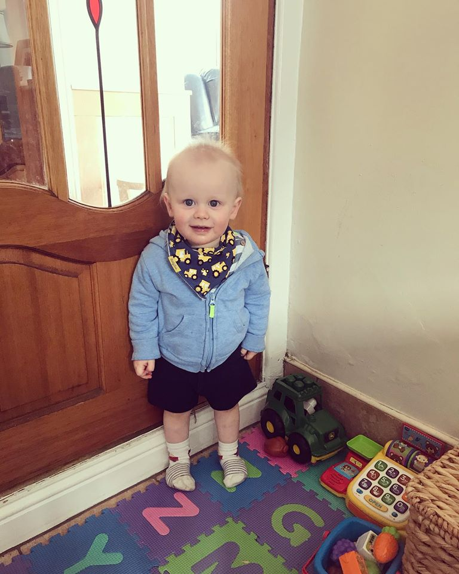

| Ingredients | Quantity |
|---|---|
| Buttermilk | 1 cup |
| Flour | 2 cups |
| Baking Soda | 1 tsp |
| Salt | 1/2 tsp |
Step 1: Mix all dry ingredients in a bowl.
Step 2:Make well in the middle and pour in buttermilk.
Step 3: Mix together and kneed
Step 4: Add to pan on medium heat and turn after 7 minutes.
| Ingredients | Quantity |
|---|---|
| Chocolate | 1 cup |
| Biscuits | 2 cups |
| Smarties | 100g |
| Butter | 80g |
Step 1: Melt butter and chocolate.
Step 2:Crush biscuits in a bowl
Step 3:Add in smarties and melted chocolate/butter.
Step 4: Stir together and pour into prepared tin.
